Svaku kuhinju crtamo za konkretan prostor, od rasporeda elemenata do poslednje fioke. Radimo je od kvalitetnog drveta i ploča, sa okovima koji traju.
Zakaži procenu kuhinje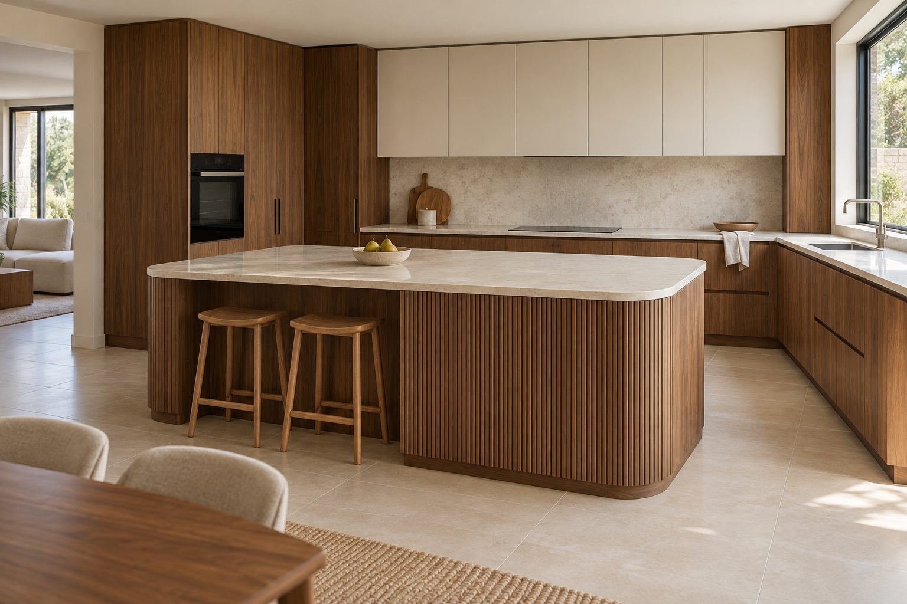
Oblik biramo prema prostoru, prozorima i instalacijama, ali i prema tome koliko vas kuva.
Uz jedan zid, za uže prostore i manje stanove.
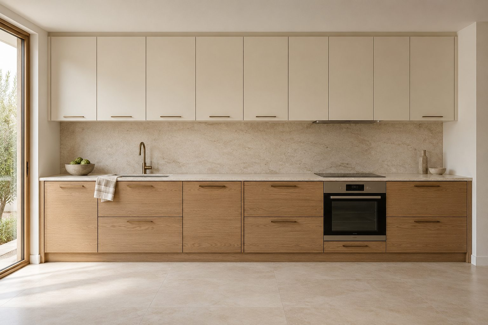
Koristi ugao i daje više radne površine.
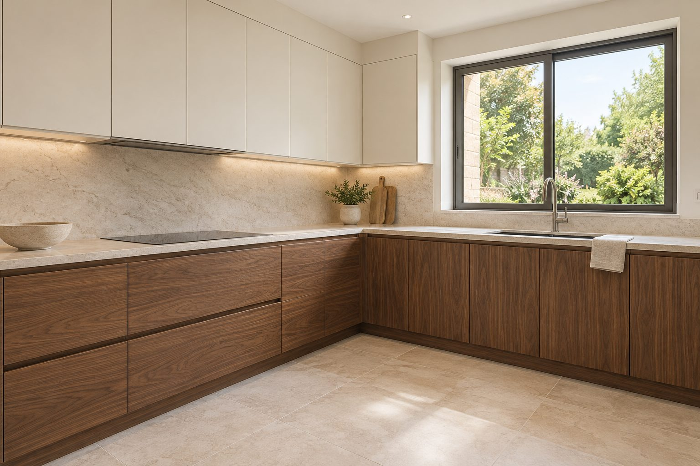
Sve na dohvat ruke, uz najviše mesta za odlaganje.
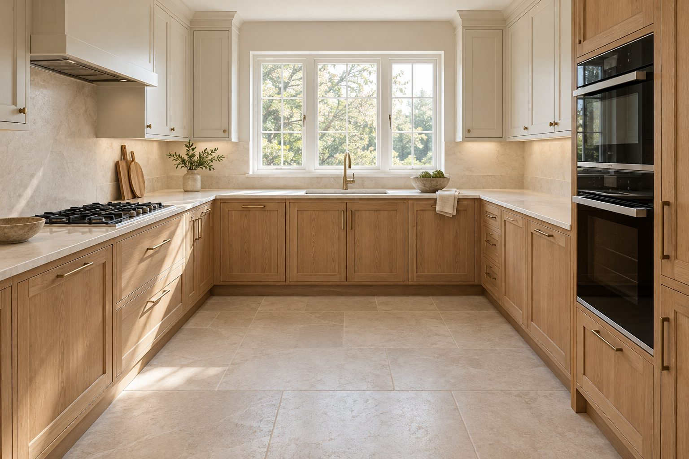
Ostrvo za pripremu, doručak i druženje.
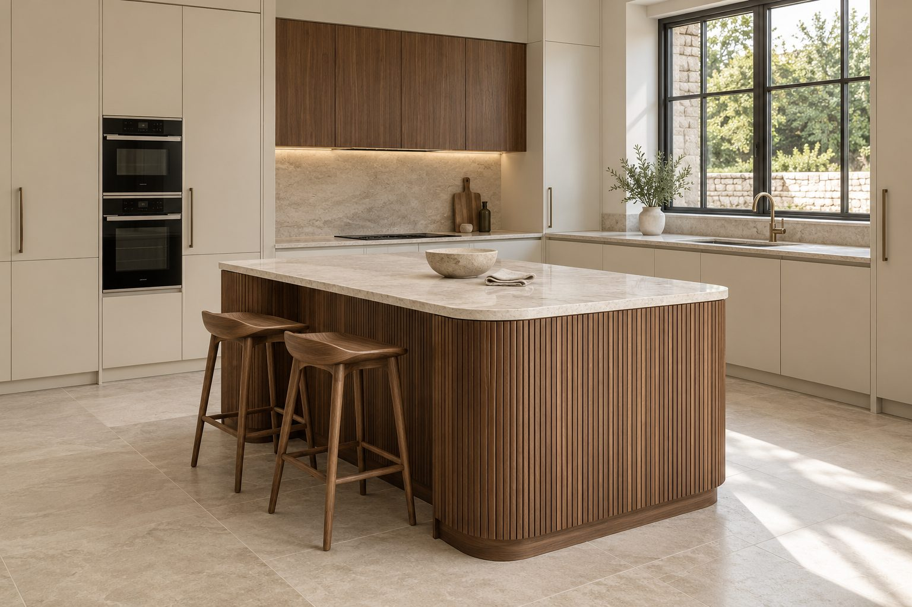
Profilisane fronte od masiva i vidljiva šara drveta. Toplina koja se ne menja sa modom.
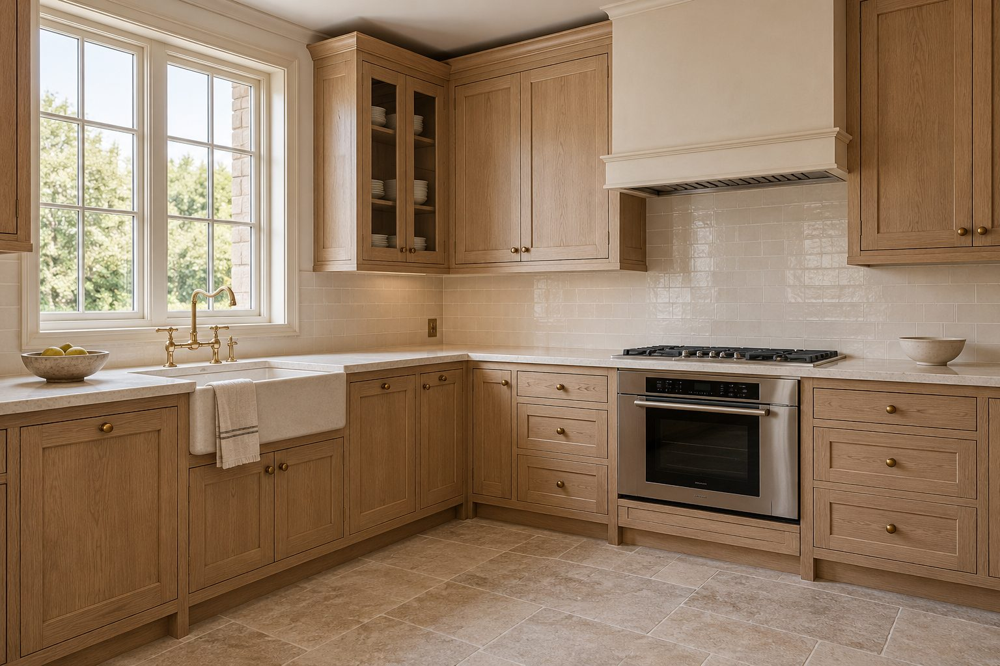
Ravne fronte, skriveni ručkohvati i čiste linije. Toplina drveta u savremenom ključu, za mirne i uredne kuhinje.
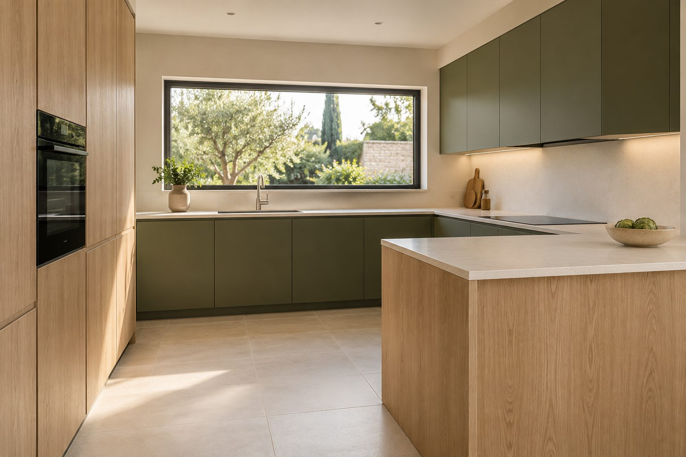
Kuhinja se koristi svaki dan, pa se kvalitet vidi u sitnicama. Fioke spajamo na lastin rep, okove biramo da izdrže godine otvaranja, a svaku ivicu ručno doterujemo. Materijale i opremu biramo zajedno sa vama, prema tome kako kuvate i koliko vam je mesta potrebno.
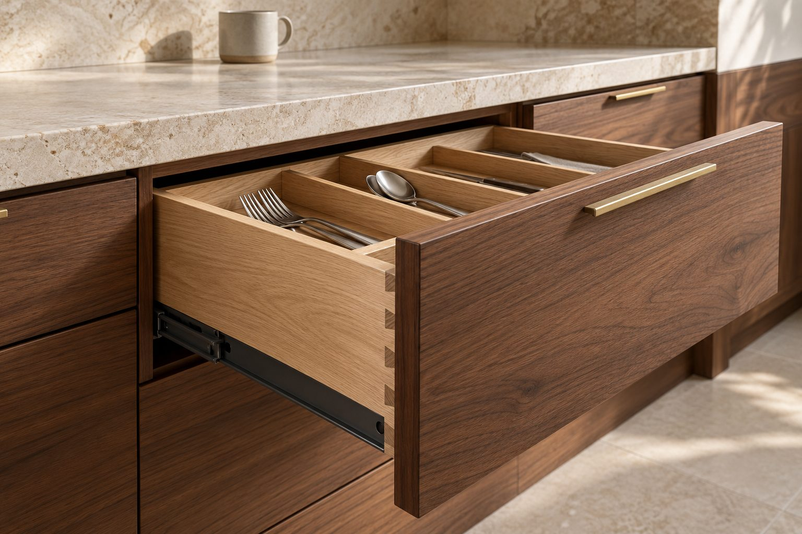
Nekoliko kuhinja koje smo uradili za porodice u Kragujevcu i okolini. Svaka je pravljena za svoj prostor i svoje ukućane, pa nijedna nije ista.
Pogledaj sve kuhinje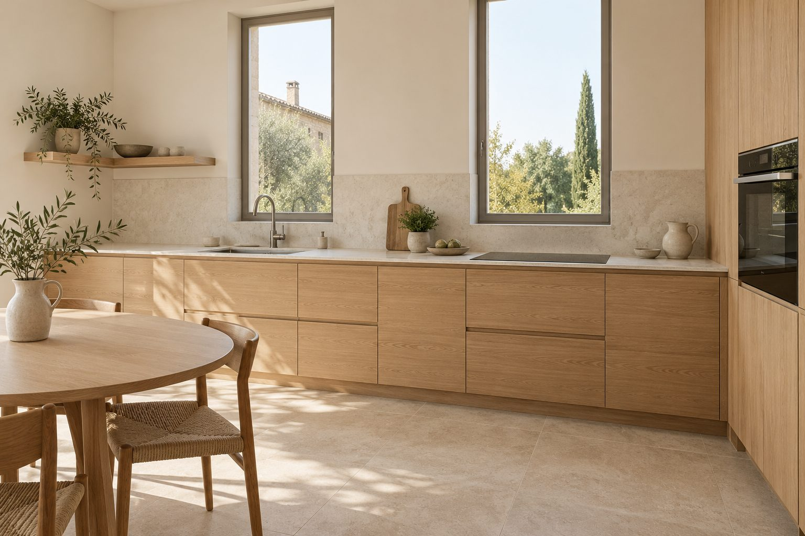
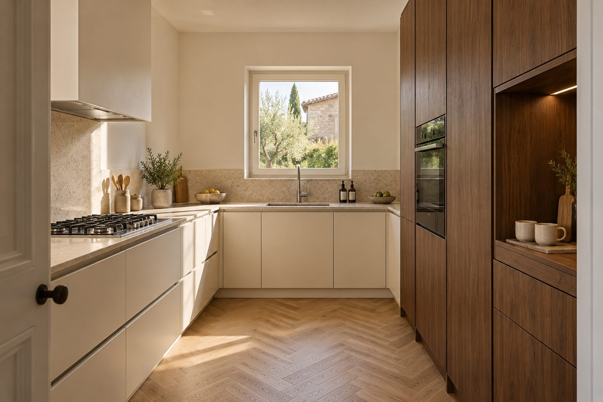
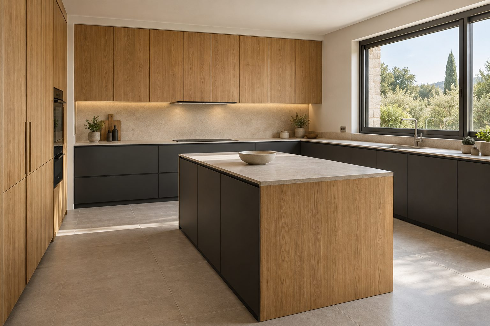
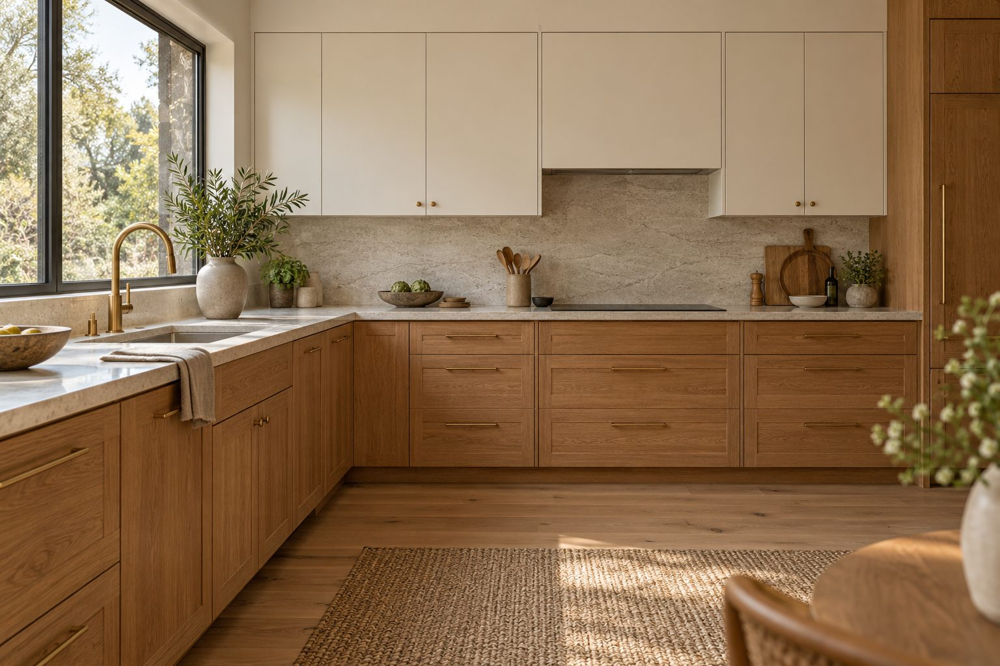
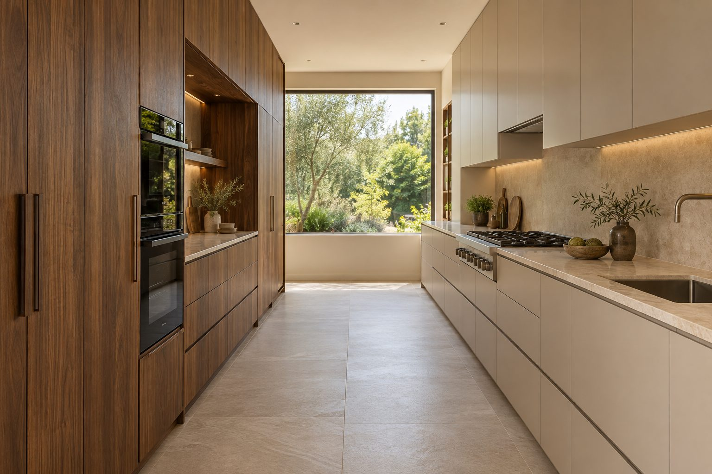
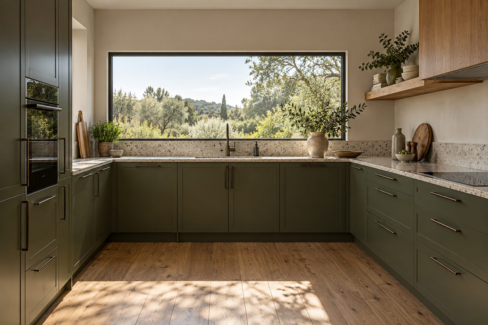